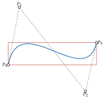

Cubic segments and paths
Renderers draw cubics: TikZ's .. controls .., SVG's C and Matplotlib's
CURVE4 all take four control points. CubicBezierSegment is that cubic as
a value object, and PiecewiseBezier joins cubics into paths.
Cubic segments
CubicBezierSegment(
p0,
p1,
p2,
p3,
*,
fit_error=None
)The measured error of a fitted segment (Fitting); kept through split, segment and reversal, and ignored by equality.
Convert to a degree-3 BezierCurve without changing a control point.
Convert a degree-3 BezierCurve without changing a control point.
The exact cubic of a line (Lines and quadratics as cubics).
The exact cubic of a quadratic (Lines and quadratics as cubics).
An immutable cubic with its four control points as the fields p0, p1,
p2, p3 (also control_points, and iteration). It evaluates,
differentiates, splits, restricts and reverses like a BezierCurve, but
split(), segment() and reversed() return cubic segments again.
segment(t, t) returns the degenerate cubic whose four controls are all
\(B(t)\).
Tight bounding boxes
Definition · Axis-aligned bounding box
The axis-aligned bounding box of a non-empty bounded set \(K \subset \mathbb{R}^d\) is the smallest box
that contains \(K\), where \(\alpha_k = \inf \lbrace x_k : x \in K\rbrace\) and \(\beta_k = \sup \lbrace x_k : x \in K\rbrace\).
The convex hull of the control points contains a curve (Convex hull) but can be
far larger than it. bounding_box returns the box of Axis-aligned bounding box for the
curve itself (The tight bounding box of a cubic.). Its candidates come from the roots of the
derivative of each coordinate.
Proposition · Bounding box of a cubic
Let \(B\) be the cubic with control points \(P_0, \ldots, P_3 \in \mathbb{R}^d\), and put
Then \(B(t) = a t^3 + b t^2 + c t + P_0\). For each coordinate \(k\) let \(T_k\) consist of \(0\), \(1\) and the roots in \((0, 1)\) of
when this polynomial is not identically zero; when it is, \(T_k = \lbrace 0, 1\rbrace\). Then the coordinates of the bounding box of \(B([0, 1])\) are
CubicBezierSegment.bounding_box(low, high): two points holding the per-axis minimum and maximum of the
curve, found by evaluating it at the candidate parameters of Bounding box of a cubic.

Degree elevation
Degree elevation (Degree elevation) writes a curve of degree \(n\) as a curve of degree \(n + 1\) with the same parameterization. The package needs it to write lines and quadratics as cubics, so that every renderer receives four control points. Applying Degree elevation once or twice gives the controls below.
Proposition · Lines and quadratics as cubics
The line from \(P_0\) to \(P_3\), parameterized by \((1 - t) P_0 + t P_3\), is the cubic with controls
The quadratic with controls \(P_0, C, P_3\) is the cubic with controls
In both cases the curve and its parameterization are unchanged.
to_cubic(curve)In bezierkit.bezier. Turns a linear, quadratic or cubic BezierCurve
into a CubicBezierSegment by Lines and quadratics as cubics (a segment is returned as
is); higher degrees raise DegreeError.
line_to_cubic(p0, p3)The cubic of the line from p0 to p3.
quadratic_to_cubic(
p0,
control,
p3
)The cubic of the quadratic with the given controls.
from bezierkit.bezier import to_cubic
q = BezierCurve.quadratic(Point(0, 0), Point(3, 6), Point(9, 0))
print(to_cubic(q).control_points)
# (Point(coords=(0.0, 0.0)), Point(coords=(2.0, 4.0)),
# Point(coords=(5.0, 4.0)), Point(coords=(9.0, 0.0)))
Piecewise paths
PiecewiseBezier(
segments,
*,
closed=False,
continuity_tolerance=1e-9
)
PiecewiseBezier.compound(paths)The segments in order.
Their control points.
The BezierSubpaths.
Evaluate under the uniform parameterization.
Evaluate at many parameters.
Divide the path at t; a parameter inside a segment splits that segment (Subdivision).
Keep the part between two parameters.
Reverse the order of the segments and each segment.
Closure flag.
Whether there are several subpaths.
The dimension \(d\).
A path of cubic segments. Consecutive segments must meet: each segment's
p3 must lie within continuity_tolerance of the next one's p0, and a
closed path's last p3 within it of the first p0; otherwise
ValueError is raised. closed is metadata for exporters (SVG Z, TikZ
cycle): it never adds a closing segment.
The package parameterizes a path uniformly. This is a convention of the package, not a standard notion: a path of \(m\) segments \(S_0, \ldots, S_{m-1}\) is the map
Each segment takes an equal share \(1 / m\) of \([0, 1]\), regardless of its length.
from bezierkit import CubicBezierSegment, PiecewiseBezier
path = PiecewiseBezier(
[
CubicBezierSegment.from_line(Point(0, 0), Point(2, 0)),
CubicBezierSegment.from_line(Point(2, 0), Point(2, 4)),
]
)
# Point(coords=(2.0, 2.0))
print(path.at(0.75))
# Point(coords=(2.0, 2.0))
print(path.segment(0.25, 0.75).at(1.0))
compound() gathers several paths into one, keeping their subpaths
separate, as for a shape with a hole. A compound path has no single
parameterization: evaluating, splitting or restricting it raises
ValueError; reversal and export work. Splitting or restricting a closed
path also raises, except for the whole path or a single point, since a
closed path has no first and last point to keep.
Continuity
Two curves meet at a join. Let \(h_S, h_T > 0\), let \(S : [u_0 - h_S, u_0] \to \mathbb{R}^d\) and \(T : [u_0, u_0 + h_T] \to \mathbb{R}^d\) be continuously differentiable as often as needed (with one-sided derivatives at the ends of their intervals), and let \(C\) be the curve that equals \(S\) on the first interval and \(T\) on the second.
Definition · Parametric continuity
For \(k \ge 0\), the curve \(C\) is \(C^k\) at \(u_0\) if \(S^{(j)}(u_0) = T^{(j)}(u_0)\) for \(j = 0, \ldots, k\).
Definition · Geometric continuity \(G^1\)
The curve \(C\) is \(G^1\) at \(u_0\) if \(S(u_0) = T(u_0)\), the tangent vectors \(S'(u_0)\) and \(T'(u_0)\) are non-zero, and \(T'(u_0) = \lambda S'(u_0)\) for some \(\lambda > 0\); that is, the two unit tangents agree.
Parametric and geometric continuity are the standard notions for joined curves Farin (2002)Prautzsch (2002); the geometric notion of every order \(k\) is treated by Barsky (1989). This manual uses \(C^0\), \(C^1\) and \(G^1\) only. A \(C^1\) join with non-zero tangents is \(G^1\).
Proposition · Continuity of cubic joins
Let \(S\) and \(T\) be the cubics with controls \(P_0, \ldots, P_3\) and \(Q_0, \ldots, Q_3\), evaluated at \((u - u_0 + h_S) / h_S\) and \((u - u_0) / h_T\) respectively. + \(C\) is \(C^0\) at \(u_0\) if and only if \(P_3 = Q_0\). + If \(P_3 = Q_0\), then \(C\) is \(C^1\) at \(u_0\) if and only if
- If \(P_3 = Q_0\), \(P_3 \ne P_2\) and \(Q_1 \ne Q_0\), then \(C\) is \(G^1\) at \(u_0\) if and only if \(Q_1 - Q_0 = \mu (P_3 - P_2)\) for some \(\mu > 0\).
- Under the uniform parameterization of
PiecewiseBezier, \(h_S = h_T\), so the condition in 2 reads \(P_3 - P_2 = Q_1 - Q_0\).
PiecewiseBezier enforces only \(C^0\), a shared endpoint. Whether a join
should also be smooth is the caller's decision: a kink in an indifference
curve or a corner in a polyline is meant to stay.